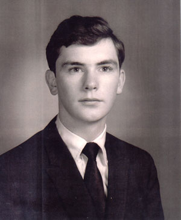

Bob (his father), Kate (his grandmother), Joel, & Cara (his daughter)
| Joel Craig was born on the 17th of May in Albany, NY to Robert And Virginia Craig. He was training for the priesthood until he met Beverly Gerber, who changed his mind about a celebate lifestyle. They were married on the 7th of June, 1974 in Annandale, VA. |
 |
|
Bob (his father), Kate (his grandmother), Joel, & Cara (his daughter) |
Joel and Bev decided to live in Manassas and raise a family. Together they had two daughters, Cara and Colleen - both Irish names because Joel was proud of his Irish heritage. Unfortunately, Joel had diabetes, slowing withering him away as he watched his children grow. Eventually, it took his life in 1985. |